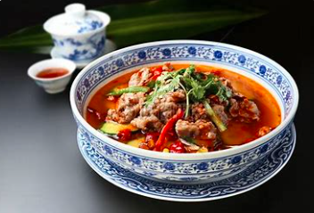
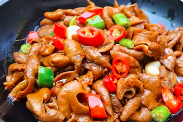

水煮牛肉是特色传统名菜，属川菜系。主料瘦黄牛肉。辅料豆芽、鸭血。调料葱、精盐、酱油、花椒、干辣椒、辣椒油、胡椒粉、郫县豆瓣酱。因菜中牛肉片是在辣味汤中烫熟，故名水煮牛肉。

自贡冷吃兔又名浓味冷吃兔、香辣兔，是自贡及其富顺、荣县一种民间传统美食，迄今已有百余年历史。自贡冷吃兔有椒香麻辣味、香辣豆豉味、秘制陈皮味、滋鲜盐焗味等多种不同口味。

自贡火边子牛肉，四川省自贡市大安区特产，中国国家地理标志产品。自贡火边子牛肉，薄而透明，肉质坚实，无筋膜、无筋腱，鲜香化渣，绵软可口，回味悠长，咸度适中，其味厚重，其香特异。

富顺豆花，是一道四川的地方特色小吃。其口味滋润、散酥、浓香。富顺豆花是嫩豆花、豆花蘸水、大米饭配合食用的豆制品中经过简单加工的一种食品，在中国饮食文化中占有一席之地。

火爆肥肠是四川自贡的有一道名菜，也是盐帮菜，以其味道鲜辣脆爽而出名。肥肠是用于输送和消化食物的，有很强的韧性，并不象猪肚那样厚，还有适量的脂肪。肥肠有润燥、补虚、止渴止血之功效。